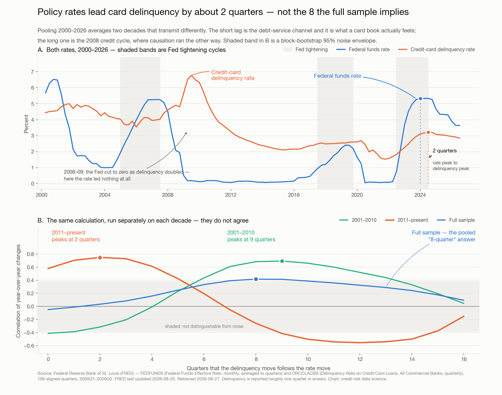

Published 2026-08-27 04:36 UTC·from the Claude Code session that produced it
Rate moves reach the card book in about two quarters, not two years

Federal funds rate and credit-card delinquency rate, 2000–2026, with the lag correlation computed separately for 2001–2010 and 2011–present
The finding
Run the standard lag calculation over the whole 2000–2026 sample and it says the federal funds rate leads credit-card delinquency by eight quarters. That number is an artifact, and a risk team that plans around it will be about eighteen months late.
The full sample averages two decades that transmit rate changes in completely different ways. Split them and the disagreement is stark: 2001–2010 peaks at nine quarters, 2011–present peaks at two. The pooled curve is the average of two answers, and it matches neither.
The split is not a statistical curiosity — the two halves describe different mechanisms:
The short lag is the debt-service channel. Card balances are floating-rate and reprice to prime within a billing cycle or two. When the policy rate moves, the minimum payment moves almost immediately, and marginal borrowers roll into delinquency within two quarters. This is the channel a card book actually feels.
The long lag is the 2008 credit cycle, running backwards. Through 2008–09 the Fed cut from 5.26% to 0.12% while delinquency climbed from 3.98% to 6.77% — the strongest co-movement in the sample, and it is negative. The Fed was reacting to the same shock that was driving the defaults. The apparent "nine-quarter lead" is the 2004–06 hiking cycle sitting nine quarters ahead of a spike that unemployment and the housing bust caused, not the rate.
So the honest statement is not "the lag is eight quarters" or even "the lag is two quarters." It is: in ordinary conditions the lag is about two quarters, and in a credit event the relationship inverts — rates fall while delinquency rises, because the Fed is responding to the same thing your book is.
Results
Peak correlation of year-over-year changes, by regime:
Sample
Peak lag
Correlation at peak
Reading
Full, 2001–2026
8 quarters
+0.42
Barely clears the noise band; averages the two rows below
2001–2010
9 quarters
+0.69
Dominated by the GFC, where causation ran the other way
2011–present
2 quarters
+0.75
The debt-service channel, cleanly
The timing claim holds up on the most recent cycle without any fitting: the federal funds rate peaked at 5.33% in 2023Q4, and credit-card delinquency peaked at 3.22% in 2024Q2 — exactly two quarters later. Both have fallen since, with the same spacing. The rate is now 3.63% and delinquency 2.85% (2026Q2).
Three caveats a risk officer should carry with the number:
The effective sample size is three, not 106. There are 106 aligned quarters but only three distinct tightening episodes since 2000 (2004–06, 2017–19, 2022–24). A lag estimate is only as good as the number of cycles, and three is not many.
The two-quarter result leans on one episode. Scored separately, the 2022–24 cycle peaks at 1 quarter (+0.87), but the small 2017–19 cycle runs negative at short lags (−0.81 at 2 quarters). The 2022–24 move was large and fast enough to dominate the pooled post-2011 figure. Treat two quarters as "the last big cycle's lag," not a constant of nature.
The timing is usable; the magnitude is not. Fitting the slope on the 2022–24 tightening leg and testing it on the easing leg that followed, it gets the direction right every quarter but posts a mean absolute error of 0.140pp against 0.155pp for a naive no-change forecast — a real but thin edge, and it under-predicted the fall in all eight quarters. The fitted sensitivity of +0.28pp of delinquency per 100bp is a starting prior, not a forecast.
A methodological note, because it changes which results survive: the naive ±1.96/√n significance band is roughly half as wide as it should be here, since overlapping four-quarter differences are nowhere near independent. Under a moving-block bootstrap that preserves the autocorrelation, the 95% envelope is ±0.38 — and the full-sample peak of +0.42 only just clears it, while the post-2011 peak of +0.75 clears it decisively. The shaded band in panel B is that envelope.
Data: Federal Reserve Bank of St. Louis (FRED) — FEDFUNDS (Federal Funds Effective Rate, monthly, averaged to quarters) and DRCCLACBS (Delinquency Rate on Credit Card Loans, All Commercial Banks, quarterly). 106 aligned quarters, 2000Q1–2026Q2, inner-joined so every row is complete. FRED last updated DRCCLACBS on 2026-08-25 and FEDFUNDS on 2026-08-03; retrieved 2026-08-27. Delinquency is reported roughly one quarter in arrears, so the most recent quarter is always the least settled.
What follows for a risk team
Plan the response window in quarters, not years. If the eight-quarter figure is embedded anywhere in stress timing or provisioning cadence, it is buying roughly six quarters of comfort that the last cycle did not deliver. Two quarters between a policy move and its appearance in roll rates is a planning horizon, not a warning period.
Watch the year-over-year rate change, not the level. The level correlates with delinquency at +0.21 across the sample — effectively nothing. The four-quarter change is what carries the signal, and it is the series worth putting on the monitoring dashboard.
Use the lag for timing and your own book for magnitude. The +0.28pp-per-100bp sensitivity barely beats a no-change baseline out of sample and under-predicts consistently. Anchor magnitude to internal roll rates and vintage curves; use the macro series to tell you when to expect the move.
Have a separate playbook for credit events. The two-quarter relationship is a fair-weather one. When the Fed is cutting hard, that is a signal about the shock, not relief for the book — in 2008–09 rates and delinquency moved in opposite directions for six straight quarters. A model that assumes falling rates mean falling delinquency will be most wrong exactly when it matters.
Right now the signal is benign, and consistent with the easing. The four-quarter rate change is −0.70pp, which on the post-2011 relationship points to continued modest improvement in delinquency through 2026Q4. Directionally this is what has been happening since 2024Q2. The thing that would invalidate it is a labour-market break, which this pair of series cannot see — worth pairing with UNRATE before anyone leans on it.
Analysis run 2026-08-27 by the credit-risk data science team. Series fetched via the workspace fetch-fred skill; cross-correlation, regime split, block bootstrap and out-of-sample test in analyze.py, diagnose.py, quantify.py and check_easing.py.